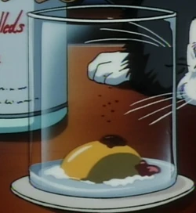
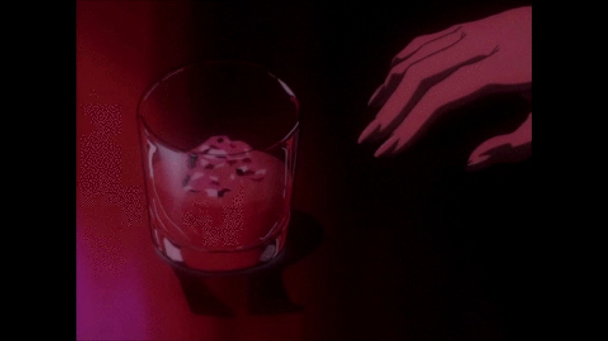
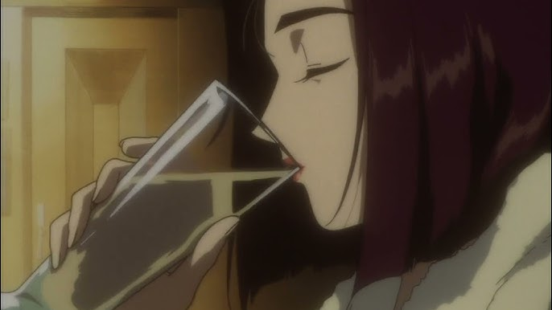

See you soon, cowboy!
Prairie Oyster

Description
Get ready for jazzy space adventure!
Ingredients
- one egg yolk
- a pinch of salt and pepper
- two servings of Worcestershire sauce
- one portion of hot sauce (Tabasco or Cholula)
- 30 ml of gin
Steps
- Add an egg yolk to a small glass without breaking it
- Put in a pinch of salt and a little black pepper
- Combine with a couple of dashes of Worcestershire sauce
- Add one dash of hot sauce
- Pour gin
Cowboy

Description
*aims gun* — *fires twice* — *blows smoke off the barrel*
Ingredients
- 30 ml of Half-and-Half mixture (cream and milk)
- 60 ml of bourbon
Steps
- Mix ingredients
- Shake the mixture over ice
- Strain into a cocktail glass ('cause you're always lone)
Vodka Toddy

Description
Drown your sorrow
Ingredients
- 60 ml of vodka
- 120 ml of hot water
- 15 ml of rosemary simple syrup
- thin slices of lemon
- sprig of fresh rosemary (for decoration)
Steps
- Add vodka to a glass
- Pour in hot water
- Add rosemary simple syrup and thin slices of lemon
- Garnish with a sprig of rosemary
Credits